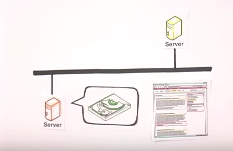
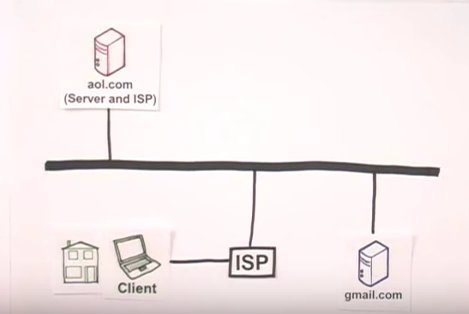
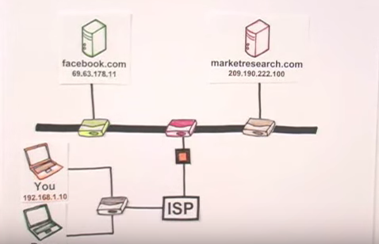

It dawned on me recently that, for someone who is seeking to become an expert on computers and technology, I know frighteningly little about how the internet really works. I had a general understanding of the concepts, and could rattle off a few buzzwords like "servers" and "fiber optics", but I didn't have a full understanding that I felt comfortable with. For this reason, I have dedicated this week's blog post to a high-level description of how the internet works.
The internet, how we think of it, is best described as a means by which computers are connected. This connection can be made through a physical wire, made of copper or fiberoptics, or it can be a cell phone network or satellite signals. The value of the internet is that it allows two computers that are directly connected to the internet to communicate with each other. These computers that are directly connected to the internet are called servers. Web pages that you may visit on the internet, are files located on a server's hard drive. Every server has a unique internet protocol or IP address. IP addresses act like postal codes, allowing computers to find each other.
Regular computers, like the one I am typing on, do not connect directly to the internet as servers do. They must first connect to the internet through an internet service provider, or ISP, and are thus referred to as clients. For a client computer to access a web page on the internet, say Google.com, they first connect to an ISP, which then allows them to connect to the internet and view the web page, which is actually a series of files located on the hard drives of Google's servers.
What allows you to see the information on Google's pages are something called packets. Every piece of information that travels on the internet - emails, web pages, tweets, etc - is broken down into small fragments called packets, which travel across the internet and are then reassembled to form the original information when they reach their destination. Packets are able to navigate the internet with the help of IP addresses (it is important to note that everything that connects directly or indirectly to the internet has an IP address including cell phones, computers, servers, and everything in between), and routers. Routers are pieces of equipment that are located wherever two or more parts of the internet intersect. Packets carry with them information about their originating IP address, and that of their final destination. Routers read this information located on the packets and redirect the packets to the next router along their route, which in turn redirects them once more. Information you access on the internet passed through 10-15+ routers when in its packet form, before being reassembled into what you are looking at.
This is an oversimplified account of a very complex series of interactions, but I now feel much more confident in my understanding, and I hope you learned something as well.